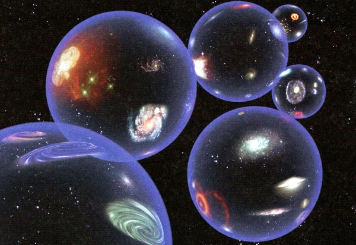
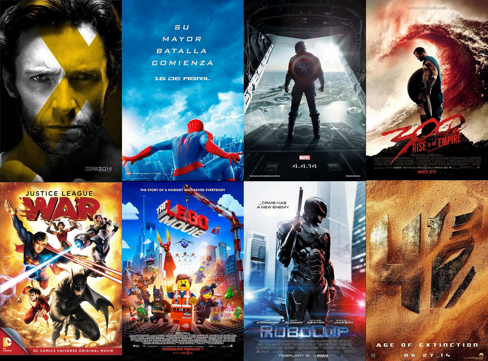

Multiversos

Multiverso es un término usado para definir el conjunto de los muchos universos existentes, según las hipótesis que afirman que existen universos diferentes del
nuestro propio. La estructura del multiverso, la naturaleza de cada universo dentro de él, así como la relación entre los diversos universos constituyentes,
dependen de la hipótesis de multiverso considerada. Según cualquiera de esas hipótesis, el multiverso comprende todo lo que existe físicamente: La totalidad del
espacio y del tiempo, todas las formas de materia, energía y cantidad de movimiento, y las leyes físicas y constantes que las gobiernan.
Con esta rápida explicación sobre los multiversos mencionaremos que en el mundo de los comics también existen dichos multiversos, tanto en DC como en Marvel.
El Multiverso DC, en el universo ficticio de las historietas de la editorial DC Comics, es una "construcción cósmica de la realidad", donde se han recogido
muchas de las fantásticas historias alternativas creadas a partir de las diferentes historias ficticias que han sido contadas y que tienen lugar dentro y
fuera de la continuidad del Universo DC. Los mundos del multiverso en esta proporción forman un espacio y destino comunes entre sí, y su estructura ha ido
cambiado varias veces en la historia de todas las historietas publicadas por DC Comics a lo largo de sus historia.1 El multiverso, describe múltiples versiones
del universo que existen en el mismo espacio, separadas unas de otras por sus resonancias vibracionales. En cada universo hay superhéroes distintos. Los
universos se identifican al referirse a Tierras alternas conocidas como Tierra-1, Tierra-2, Tierra-3, Tierra-4, etc. Los dos primeros mundos paralelos fueron
presentados en 1961 en el cómic The Flash # 123,2 en la historia El Flash de dos mundos. El Multiverso fue eliminado en la Crisis en Tierras Infinitas, una
miniserie publicada en 1985. Pero regresó en la Saga de Crisis Infinita, y la miniserie 52, siendo redefinido por completo en Crisis Final, entre 2005 y el 2009.
En cambio dentro de Marvel Comics, la mayoría de las historias tienen lugar en el ficticio universo Marvel principal. Cada uno de los componentes dentro de cada
universo, guarda un símil con el resto. Así mismo, cada universo del Multiverso Marvel cuenta con la defensa de un Hechicero Supremo en casi todo momento,
designado por el místico trinidad de Vishanti para defender al mundo contra las amenazas principalmente mágicas, la naturaleza desde dentro y más allá y que
lleva el ojo de Agamotto.
Por un lado tenemos el Universo Marvel principal. Es el universo más importante y el primero en crearse por la editorial. Allí es donde ocurren las más
emocionantes y tradicionales aventuras que viven los superhéroes.
Y por otro lado tenemos Ultimate Marvel. Es un universo en el que se moderniza a los héroes más conocidos del universo Marvel principal y donde tienen nuevos
orígenes y todo vuelve a empezar desde cero. En este universo los nombres civiles de los superhéroes y supervillanos pueden cambiar al de sus contrapartidas
clásicas. Además, pueden cambiar características físicas. Los superhéroes más conocidos en este universo son Ultimate Spiderman, Ultimate X-Men, The Ultimates
(nombre que se le da a Los Vengadores en este universo)ultimate iron man, Ultimate Fantastic Four y Ultimate Daredevil. Es denominada como Tierra-1610.
Adaptacionones del comic al cine

Los cómics o los mangas, grandes storyboards de una película en movimiento que solo pueden levitar en nuestra mente, o por que no, también en el cine. ¿El
problema? reconozcámoslo, los fans del papel en movimiento nos echamos a temblar cuando se anuncia una nueva adaptación cinematográfica de uno de nuestros cómics
favoritos. Las motas de polvo se posan sobre la mesa. La leche se corta en nuestra taza de café. Un repentino silencio viste el aire estanco de la oficina y
todos nos acordamos de Alan Moore. Nervios, sudores....¿lágrimas?
El mundo del cine busca continuamente inspiración y material para realizar sus películas y si larga es la tradición de cintas basadas en novelas, las
adaptaciones de cómics están empezando a despuntar en números. Solo este año hay media docena de películas "de perfil alto" entre 'Vengadores: Endgame',
'Shazam' y muchas más.
Entre esas adaptaciones podemos destacar las siguientes:
- El cuervo
- Men in Black
- Sin City
- Scott Pilgrim contra el mundo
- Hellboy
- Logan
- Batman (Tim Burton)
- El caballero oscuro (Trilogía de Cristopher Nolan)
- Superman (Richard Donner)
- X-Men 2
- Spiderman 2
- Akira
- X-Men: Primera generación
- Iron Man (2004)
- Esplendor Americano (2003)